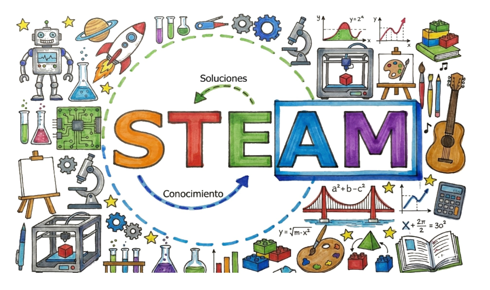
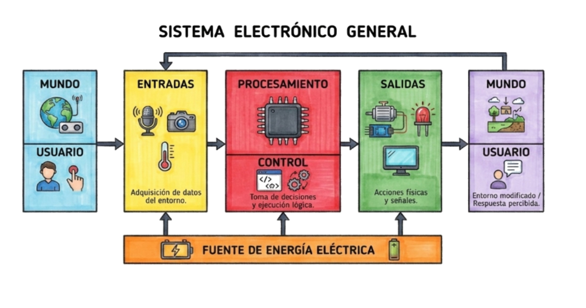
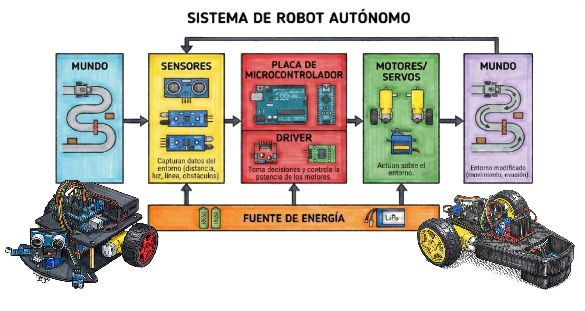

🤖 Guía Rápida: ¿Cómo usar el simulador?
Bienvenido al Simulador de Robots Seguidores de Línea. Sigue estos sencillos pasos para crear, programar y probar tu primer robot en nuestro entorno virtual.
Antes de empezar
Si eres nuevo en la robótica, te recomendamos encarecidamente visitar primero la pestaña de "Guías" en el menú superior. Ahí encontrarás teoría esencial sobre educación STEAM, componentes electrónicos y las bases lógicas de programación necesarias para tener éxito con el simulador.
🛠️ Paso 1: Crea tu Robot (Pestaña "Editor de Robot")
Aquí definirás las características físicas y electrónicas de tu vehículo:
- Atributos físicos: Ancho, agarre de llantas, y posición de los sensores.
- Configuración electrónica: Selecciona los pines de tu placa Arduino a los cuales conectarás tanto los motores como los sensores.
- Diseño visual: Arrastra componentes de la paleta lateral para construir tu chasis.
- Importante: Recuerda darle al botón verde "Cargar Diseño en Simulador" al terminar para aplicar tus cambios.
💡 Shortcut: Si quieres ver algo funcionando rápido, haz clic en el botón "Cargar Ejemplo" en esta pestaña para tener un robot de 2 sensores ensamblado de inmediato.
💻 Paso 2: Programa tu Lógica (Pestaña "Editor de Código")
Escribe el código C++ (estilo Arduino) para darle un "cerebro" al robot. Deberás leer los
sensores con digitalRead() y mover los motores con digitalWrite() o
analogWrite().
- Recuerda usar las variables y tipos de la sintaxis nativa (
int,if/else,void setup()). - Al terminar de escribir, haz clic siempre en el botón verde "Cargar Código en Simulador" para transpilar y cargar el código a la memoria del simulador.
💡 Shortcut: Haz clic en el botón "Cargar Ejemplo" en la parte baja del editor para inyectar automáticamente un algoritmo básico compatible con el robot del Paso 1.
🏁 Paso 3: Diseña tu Circuito (Pestaña "Editor de Pista")
Usa nuestra herramienta de dibujo en base a cuadrícula para crear cualquier diseño de pista:
- Selecciona curvas y trazos rectos del menú izquierdo y colócalos en el lienzo.
- O agrega el botón "Pista Aleatoria" para generar diferentes retos.
- Al terminar, asegúrate de presionar el botón verde "Cargar Pista en Simulador" para enviar el circuito.
🏎️ Paso 4: ¡A Correr! (Pestaña "Simulación")
Tu área de pruebas final. Una vez aplicados el diseño de la pista, la geometría del robot y el código:
- No olvides definir tu Línea de Salida/Meta haciendo clic en el botón de Ubicar Línea y haciendo clic sobre la pista.
- Presiona "Iniciar" para que comience la ejecución.
- Revisa el Monitor Serial para depurar errores si tu robot no hace lo que esperabas.
- Observa tus tiempos por vuelta en la ventana de cronometraje ⏱️.
Parámetros de
Simulación
Monitor Serial
Cronómetro
Vueltas: 0 | Mejor: --:--:--- | Actual: --:--:---
Monitor Serial
Editor de Código
¿Cómo usar este editor?
¡Aquí puedes escribir el código que controla tu robot usando sintaxis estilo Arduino! Revisa la sintaxis, edita el código y haz click en 'Aplicar Código' para ver cómo responde el robot en la simulación. Si te equivocas, no pasa nada, puedes volver a intentarlo o recargar la página para recuperar el código original.
¿Cómo referenciar componentes en tu código?
Los pines de los sensores varían dependiendo de la
cantidad configurada en la pestaña Editor de Robot. Usan
digitalRead(pin):
- Robot de 2 Sensores:
pin 2(Izquierdo) ypin 4(Derecho) - Robot de 2 Sensores:
pin 2(Izq.),pin 3(Der.) - Robot de 4 Sensores:
pin 5(Extremo Izq.),pin 2(Izq.),pin 4(Der.),pin 6(Extremo Der.) - Robot de 5 Sensores:
pin 5,pin 2,pin 3,pin 4,pin 6(De la izquierda a la derecha)
Los pines de los motores son siempre los mismos. Usan
analogWrite(pin, valor) (0 a 255):
- Motor Izquierdo:
pin 9 - Motor Derecho:
pin 10
Usa solo los pines que correspondan a tu robot; el simulador asume que los sensores no conectados siempre leen 1 (afuera de la línea).
Funciones que puedes usar:
- setup(): Se ejecuta una vez al comenzar. Aquí configuras los
pinMode. - loop(): Se repite muchas veces rápidamente. Aquí va la lógica principal de tu seguidor.
- digitalRead(pin): Lee si un sensor está sobre la línea (retorna 0) o fuera de ella (retorna 1).
- analogWrite(pin, valor): Cambia la velocidad de los motores usando PWM (0 para detener, 255 para máxima velocidad).
¿Cómo escribir tu lógica de control?
Puedes usar estructuras de control como if, else if, operadores como == (igualdad), = (asignación), >, <, && (y lógico), || (o lógico) para tomar decisiones. Ejemplo básico:
if (digitalRead(2) == 1) {
// Si el sensor Izquierdo (2) detecta la línea, corriges a la izquierda
analogWrite(5, 0); // Frena motor Izquierdo (IN1 = 5)
analogWrite(9, 100); // Avanza motor Derecho (IN3 = 9)
}
Recuerda declarar todas tus variables con tipos de dato de C++ (int,
float, etc.) en lugar de let.
Educación STEAM
STEAM y Robótica
Descubre cómo la Ciencia, Tecnología, Ingeniería, Artes y Matemáticas se unen en la robótica para desarrollar habilidades esenciales del siglo XXI y resolver problemas del mundo real.
Ciencia
Metodología rigurosa para la indagación que nos permite observar, experimentar y formular explicaciones sobre el mundo.
En STEAM, enseña a preguntar, investigar, recolectar evidencia y construir una mentalidad de exploración.

Ingeniería
Aplica el conocimiento sistemáticamente para resolver problemas del mundo real y hacer la vida más fácil y productiva.
Los estudiantes aprenden a identificar necesidades, idear, crear prototipos y probar sus soluciones.

Tecnología
Es el resultado de la Ingeniería: herramientas, sistemas y productos diseñados para satisfacer necesidades humanas.
Se estudia no solo como usuario, sino comprendiendo cómo funciona para poder crearla o innovarla.

Arte y Mate.
Herramientas y lenguajes fundamentales que permiten abstraer y manipular la realidad.
Matemáticas: Lógica y precisión.
Artes: Diseño,
estética y comunicación efectiva de la tecnología.

Ecosistema STEAM
La integración de cada disciplina construye el futuro de la Robótica.

Robótica Básica
Fundamentos
Descubre los componentes esenciales y la lógica detrás de los robots autónomos, desde la lectura de sensores hasta la actuación en el mundo físico.
Sistema Electrónico General
Todo robot o sistema automatizado funciona en un ciclo continuo:
- Capta información del mundo a través de Entradas (Sensores, Botones).
- Las analiza y toma decisiones en la unidad de Control/Procesamiento (Microcontrolador).
- Actúa sobre su entorno utilizando sus Salidas (Motores, LEDs).
Todo este proceso se encuentra alimentado por una Fuente de Energía Eléctrica constante.


Robot Autónomo Básico
Un robot autónomo aplica el sistema electrónico general para interactuar libremente con el mundo físico:
- Sensores: Capturan datos del entorno como la distancia, luz, líneas en una pista u obstáculos.
- Placa y Driver: El "cerebro" (Microcontrolador) procesa la información y el "músculo" (Driver) administra la potencia necesaria.
- Actuadores: Motores o servos que generan acciones, modificando la perspectiva del robot.
Todo soportado por una Fuente de Energía portátil y de alta descarga, como baterías LiPo o 18650.
De la Realidad al Código
El código es una forma de abstraer de manera simple la realidad para luego manipularla usando lógica y matemáticas que la computadora entiende.
Entradas
Sensores Digitales
Se conectan en Pines Digitales. Solo leen Estados (0 o 1).
digitalRead(pin);
Sensores Analógicos
Se conectan en Pines Analógicos (A0...). Leen un rango de voltaje continuo.
analogRead(pin);
Lógica en Placa
Aquí se toman las decisiones usando lenguaje C++:
Evalúa situaciones: "Si pasa esto, decide este camino; de lo contrario, haz esto otro".
Bucles de repetición: "Mientras una condición se siga cumpliendo, repite la acción sin parar".
Y: Exige que todas las condiciones se cumplan al mismo tiempo para accionar algo.
O: Basta con que al menos una de las condiciones sea verdadera para accionar.
Comprueba si un valor es idéntico a otro (ej: ¿Sensor == 1?).
Compara valores (mayor que, menor que).
Realiza cálculos lógicos o matemáticos.
Salidas
Salidas Digitales (On/Off)
Se activa o desactiva la corriente en los Pines Digitales.
digitalWrite(pin, HIGH);
Salidas Analógicas (PWM)
En Pines Digitales marcados con (~). Ideales para controlar la velocidad del motor.
analogWrite(pin, 255);
Conexiones Físicas: Robot 2 Sensores + L298N
Conexiones Físicas
En esta guía aprenderás a conectar correctamente los componentes electrónicos de tu robot seguidor de línea SLC (2 sensores), utilizando un controlador L298N con lógica de 4 pines (con puentes ENA/ENB activados) y un Arduino.
Esquema General
Este es el mapa general de todas las conexiones. Asegúrate de seguir los colores de los cables para evitar cortocircuitos.
| Componente | Pin Arduino | Función |
|---|---|---|
| Sensor Izqu. | Digital 2 | Entrada |
| Sensor Der. | Digital 3 | Entrada |
| L298N IN1 | Digital 5 (PWM) | Motor A Adelante |
| L298N IN2 | Digital 6 (PWM) | Motor A Atrás |
| L298N IN3 | Digital 9 (PWM) | Motor B Adelante |
| L298N IN4 | Digital 10 (PWM) | Motor B Atrás |

Sensores TCRT5000
Conecta los pines de señal de cada sensor a las entradas digitales del Arduino. No olvides alimentar todos los sensores con 5V y GND.
Verifica que los sensores estén alineados y a una distancia de 3-5mm del suelo para una lectura óptima.

Control L298N
El puente H L298N recibe órdenes del Arduino para controlar la dirección y velocidad de los motores.
| Driver L298N | Pin Arduino |
|---|---|
| IN1 (PWM) | Pin 5 |
| IN2 (PWM) | Pin 6 |
| IN3 (PWM) | Pin 9 |
| IN4 (PWM) | Pin 10 |

Sistema de Energía
Es vital que el Arduino y el L298N compartan una conexión común de GND (Tierra).
- Batería (+) a 12V del L298N.
- Batería (-) a GND del L298N.
- GND del L298N a GND del Arduino.
- 5V del L298N a 5V del Arduino (opcional si usas USB).

Motores
Conecta los cables de los motores a las borneras de salida del L298N. Si el motor gira en sentido contrario, simplemente invierte sus dos cables.
Recuerda que el Motor A suele ser el izquierdo y el Motor B el derecho.

¡Todo Listo!
Si has seguido todos los pasos, tu robot ya tiene su sistema nervioso y muscular conectado. Ahora es momento de cargar el código y verlo cobrar vida.

Programación y Lógica: SLC 2 Sensores y L298N 4 pines
SLC 2 sensores
Nota importante: Esta guía está configurada para un robot de 2 sensores y controlador L298N operando con 4 pines (5, 6, 9 y 10). La lógica base funciona igual para otros sensores solo ajustando los casos y pines.
¡Bienvenidos, equipo del SVP Steam Club! Vamos a programar paso a paso. No basta con copiar; entenderemos cada línea para ser campeones.
Configurando el Setup
Antes de que el robot se mueva, definimos qué pines están conectados a los motores (salidas) y cuáles a los sensores (entradas).
Iniciamos la comunicación para ver qué piensa el robot en la pantalla usando el Monitor Serial.
void setup() {
// Estos son los "músculos" (Motores L298N)
pinMode(5, OUTPUT); // Motor Izquierdo
pinMode(6, OUTPUT); // Motor Izquierdo
pinMode(9, OUTPUT); // Motor Derecho
pinMode(10, OUTPUT); // Motor Derecho
// Estos son los "sentidos" (Sensores infrarrojos)
pinMode(2, INPUT); // Sensor Izquierdo
pinMode(3, INPUT); // Sensor Derecho
// Iniciamos comunicación con el Monitor Serial
Serial.begin(9600);
}
void loop() {
// Por ahora, lo dejamos vacío.
}¡A mover los motores!
1. El Secreto de los Motores: La Analogía de la Batería
Imagina que cada motor de tu robot es un motorcito normal con dos cables sueltos.
- Si conectas un cable al Positivo (+) y otro al Negativo (-), el motor gira hacia adelante.
- Si inviertes los cables en la batería, el motor gira hacia atrás.
¿Cómo le damos energía en código?
Usamos la
instrucción analogWrite(pin, velocidad).
- 0 significa conectarlo al Negativo (-).
- 180 significa conectarlo al Positivo (+) (de 0 a 255).
Ejemplo para avanzar (Motor Izquierdo):
analogWrite(5, 180); analogWrite(6, 0);
¡Reto para ustedes!
Cambia los 100 por otros valores (0-255). ¿Qué hace el robot si pones 200 a un lado y 0 al otro? Fíjate muy bien hacia qué lado gira.
void setup() {
// Estos son los "músculos" (Motores L298N)
pinMode(5, OUTPUT); // Motor Izquierdo
pinMode(6, OUTPUT); // Motor Izquierdo
pinMode(9, OUTPUT); // Motor Derecho
pinMode(10, OUTPUT); // Motor Derecho
// Estos son los "sentidos" (Sensores infrarrojos)
pinMode(2, INPUT); // Sensor Izquierdo
pinMode(3, INPUT); // Sensor Derecho
// Iniciamos comunicación con el Monitor Serial
Serial.begin(9600);
}
void loop() {
// Rueda izquierda hacia adelante
analogWrite(5, 100);
analogWrite(6, 0);
// Rueda derecha hacia adelante
analogWrite(9, 100);
analogWrite(10, 0);
}Leyendo la pista
Queremos ver el mundo a través de los sensores. Sube el código y abre el Monitor Serial (la lupa arriba a la derecha en Arduino).
Mueve el robot con las manos sobre la línea negra. ¿Cuándo marca 0 y cuándo marca 1?
void setup() {
// Estos son los "músculos" (Motores L298N)
pinMode(5, OUTPUT); // Motor Izquierdo
pinMode(6, OUTPUT); // Motor Izquierdo
pinMode(9, OUTPUT); // Motor Derecho
pinMode(10, OUTPUT); // Motor Derecho
// Estos son los "sentidos" (Sensores infrarrojos)
pinMode(2, INPUT); // Sensor Izquierdo
pinMode(3, INPUT); // Sensor Derecho
// Iniciamos comunicación con el Monitor Serial
Serial.begin(9600);
}
void loop() {
// Leemos y mostramos el valor de cada sensor (0 o 1)
Serial.print("Izq: ");
Serial.print(digitalRead(2));
Serial.print(" | Der: ");
Serial.println(digitalRead(3));
delay(100);
}La primera decisión (if)
Unimos movimiento y lectura con la condición if ("Si pasa esto...").
Hagamos que si el sensor derecho (3) ve la línea, el robot mueva solo la rueda izquierda para corregir.
void setup() {
// Estos son los "músculos" (Motores L298N)
pinMode(5, OUTPUT); // Motor Izquierdo
pinMode(6, OUTPUT); // Motor Izquierdo
pinMode(9, OUTPUT); // Motor Derecho
pinMode(10, OUTPUT); // Motor Derecho
// Estos son los "sentidos" (Sensores infrarrojos)
pinMode(2, INPUT); // Sensor Izquierdo
pinMode(3, INPUT); // Sensor Derecho
// Iniciamos comunicación con el Monitor Serial
Serial.begin(9600);
}
void loop() {
if (digitalRead(2) == 1) {
analogWrite(5, 0);
analogWrite(6, 0);
analogWrite(9, 100);
analogWrite(10, 0);
}
}Agregando el otro sensor
Ahora añadimos la condición para el sensor izquierdo (2) usando otra instrucción
if separada.
¡Ojo! Más adelante veremos cómo evitar que los sensores se solapen y se confundan, pero por el momento usaremos sentencias separadas para cada uno.
void setup() {
// Estos son los "músculos" (Motores L298N)
pinMode(5, OUTPUT); // Motor Izquierdo
pinMode(6, OUTPUT); // Motor Izquierdo
pinMode(9, OUTPUT); // Motor Derecho
pinMode(10, OUTPUT); // Motor Derecho
// Estos son los "sentidos" (Sensores infrarrojos)
pinMode(2, INPUT); // Sensor Izquierdo
pinMode(3, INPUT); // Sensor Derecho
// Iniciamos comunicación con el Monitor Serial
Serial.begin(9600);
}
void loop() {
if (digitalRead(2) == 1) {
analogWrite(5, 0);
analogWrite(6, 0);
analogWrite(9, 100);
analogWrite(10, 0);
}
if (digitalRead(3) == 1) {
analogWrite(5, 100);
analogWrite(6, 0);
analogWrite(9, 0);
analogWrite(10, 0);
}
}🏆 ¡Objetivo Principal Logrado!
¡Felicidades! Si has llegado hasta aquí y probado este código, ya tienes un seguidor de líneas funcional. Hace lo básico y necesario: avanza y corrige el rumbo.
Todo lo que vamos a hacer a partir de ahora no es para que "funcione", sino para mejorarlo y hacerlo más rápido.
Uso de Variables
Creamos "cajas" para guardar la velocidad al principio del código.
Así, si queremos ajustar el ritmo de competencia, solo cambiamos el valor
de vel en un solo lugar.
int vel = 230; // Velocidad para avanzar
int velinv = 80; // Velocidad para corregir/girar
void loop() {
if (digitalRead(2) == 0 && digitalRead(3) == 0) {
analogWrite(5, vel); analogWrite(6, 0);
analogWrite(9, vel); analogWrite(10, 0);
}
// ... resto del código usando 'vel' y 'velinv'
}El Diseño (Editor de Robot)
La forma física afecta el código. En la pestaña Editor de Robot, si ajustas la separación, abres nuevas posibilidades:
- • Acercar los Sensores: Si los acercas para que ambos quepan dentro de la línea, se crea un nuevo estado principal donde ambos tocan la línea simultáneamente.
- Ahora estar "centrado" significa que ambos leen
1. Y puedes usar el operador lógico&&(Y) para programar este nuevo comportamiento base.
int vel = 230; // Velocidad para avanzar
int velinv = 80; // Velocidad para corregir
void setup() {
pinMode(5, OUTPUT); pinMode(6, OUTPUT);
pinMode(9, OUTPUT); pinMode(10, OUTPUT);
pinMode(2, INPUT); pinMode(3, INPUT);
Serial.begin(9600);
}
void loop() {
// Ahora "centrado" es cuando AMBOS ven la línea (1)
if (digitalRead(2) == 1 && digitalRead(3) == 1) {
analogWrite(5, vel); analogWrite(6, 0);
analogWrite(9, vel); analogWrite(10, 0);
}
// Si solo el izquierdo la ve, corregir a la izquierda
else if (digitalRead(2) == 1 && digitalRead(3) == 0) {
analogWrite(5, 0); analogWrite(6, velinv);
analogWrite(9, vel); analogWrite(10, 0);
}
// Si solo el derecho la ve, corregir a la derecha
else if (digitalRead(2) == 0 && digitalRead(3) == 1) {
analogWrite(5, vel); analogWrite(6, 0);
analogWrite(9, 0); analogWrite(10, velinv);
}
}Código Maestro con Memoria
¿Qué pasa si el robot va muy rápido y ambos sensores se salen de la línea al mismo tiempo en una curva pronunciada?
Al guardar el último movimiento en la variable ultimoDir, dotamos al
robot de "memoria". Esta memoria genera un nuevo bloque de estados de emergencia
(fuera de la línea), dándonos 5 estados posibles en total:
- Centrado (ambos en la línea).
- Solo izquierdo o Solo derecho (pequeñas correcciones).
- Fuera a la izquierda o Fuera a la derecha (emergencia con memoria).
Incluso podemos usar una nueva variable velPico para girar de forma
mucho más agresiva solo cuando estamos completamente fuera de la línea.
¡Nivel de Competencia!
Tu robot ahora tiene memoria para afrontar las curvas más difíciles sin perderse.
int vel = 230; // Velocidad para avanzar (Centrado)
int velinv = 80; // Velocidad para corrección suave (1 sensor)
int velPico = 150; // Velocidad extrema de rescate (salida completa)
int ultimoDir = 2; // 1: Izq, 2: Centro, 3: Der
void setup() {
pinMode(5, OUTPUT); pinMode(6, OUTPUT);
pinMode(9, OUTPUT); pinMode(10, OUTPUT);
pinMode(2, INPUT); pinMode(3, INPUT);
Serial.begin(9600);
}
void loop() {
int izq = digitalRead(2);
int der = digitalRead(3);
// 1. CENTRADO (Ambos sensores tocan la línea)
if (izq == 1 && der == 1) {
analogWrite(5, vel); analogWrite(6, 0);
analogWrite(9, vel); analogWrite(10, 0);
ultimoDir = 2;
}
// 2. SOLO IZQUIERDO (Corrección suave)
else if (izq == 1 && der == 0) {
analogWrite(5, 0); analogWrite(6, velinv);
analogWrite(9, vel); analogWrite(10, 0);
ultimoDir = 1;
}
// 3. SOLO DERECHO (Corrección suave)
else if (izq == 0 && der == 1) {
analogWrite(5, vel); analogWrite(6, 0);
analogWrite(9, 0); analogWrite(10, velinv);
ultimoDir = 3;
}
// 4 y 5. FUERA DE LÍNEA (Uso de Memoria y velPico)
else if (izq == 0 && der == 0) {
if (ultimoDir == 1) {
analogWrite(5, 0); analogWrite(6, velPico);
analogWrite(9, vel); analogWrite(10, 0);
} else if (ultimoDir == 3) {
analogWrite(5, vel); analogWrite(6, 0);
analogWrite(9, 0); analogWrite(10, velPico);
}
}
}Uso de Funciones
Como habrás notado, repetir bloques de analogWrite para cada estado
hace que el código sea muy largo y difícil de leer.
Podemos "agrupar" esas instrucciones creando nuestra propia función llamada
motores(int velIzq, int velDer). En ella, si le enviamos una
velocidad positiva, el motor avanza. Si es negativa, retrocede.
¡Observa cómo se "limpia" la función loop! Ahora es mucho más fácil
entender exactamente qué hace el robot en cada uno de los 5 estados.
¡Código Pro!
Agrupar tareas repetitivas en
funciones (como motores) es el sello de un buen programador.
int vel = 230;
int velinv = 80;
int velPico = 150;
int ultimoDir = 2; // 1: Izq, 2: Centro, 3: Der
void setup() {
pinMode(5, OUTPUT); pinMode(6, OUTPUT);
pinMode(9, OUTPUT); pinMode(10, OUTPUT);
pinMode(2, INPUT); pinMode(3, INPUT);
Serial.begin(9600);
}
// Nueva función para agrupar el movimiento
void motores(int velIzq, int velDer) {
if (velIzq >= 0) {
analogWrite(5, velIzq); analogWrite(6, 0);
} else {
analogWrite(5, 0); analogWrite(6, -velIzq);
}
if (velDer >= 0) {
analogWrite(9, velDer); analogWrite(10, 0);
} else {
analogWrite(9, 0); analogWrite(10, -velDer);
}
}
void loop() {
int izq = digitalRead(2);
int der = digitalRead(3);
// 1. CENTRADO
if (izq == 1 && der == 1) {
motores(vel, vel);
ultimoDir = 2;
}
// 2. SOLO IZQUIERDO
else if (izq == 1 && der == 0) {
motores(-velinv, vel);
ultimoDir = 1;
}
// 3. SOLO DERECHO
else if (izq == 0 && der == 1) {
motores(vel, -velinv);
ultimoDir = 3;
}
// 4 y 5. FUERA DE LÍNEA (Memoria)
else if (izq == 0 && der == 0) {
if (ultimoDir == 1) {
motores(-velPico, vel);
} else if (ultimoDir == 3) {
motores(vel, -velPico);
}
}
}Control PID (Avanzado)
El control PID (Proporcional, Integral, Derivativo) es una fórmula matemática que calcula exactamente cuánta corrección necesita el robot, en lugar de usar velocidades fijas.
Nota: Para que un PID funcione de manera óptima, normalmente se necesita una "regleta" con más sensores (p.ej. 5 u 8) para medir un "gradiente" suave de qué tan lejos está la línea. Como ahora usamos solo 2, esto es una demostración didáctica de cómo se estructura la lógica.
- P (Proporcional): Qué tan lejos de la línea estamos ahora (el error). Empuja más fuerte si estamos más lejos.
- I (Integral): Si llevamos mucho tiempo fuera por inercia, esta variable crece y ayuda a empujar aún más.
- D (Derivativo): Ve qué tan rápido cambia el error y sirve como un amortiguador, evitando que el robot oscile bruscamente de un lado a otro.
En el código creamos nuestro propio "error numérico" artificial, el cual entra a
la fórmula y produce el mágico PID_value que suma y resta potencia
en cada rueda.
int velBase = 140;
int velMax = 255;
// Te recomiendo poner Ki en 0 para las primeras pruebas
float Kp = 40.0;
float Ki = .05; // <-- Apágalo temporalmente para probar solo P y D
float Kd = 20.0;
float P = 0, I = 0, D = 0;
float error = 0;
float errorAnterior = 0;
float PID_value = 0;
unsigned long tiempoAnterior = 0;
int ultimoDir = 2;
void setup() {
pinMode(5, OUTPUT); pinMode(6, OUTPUT);
pinMode(9, OUTPUT); pinMode(10, OUTPUT);
pinMode(2, INPUT); pinMode(3, INPUT);
Serial.begin(9600);
tiempoAnterior = millis();
}
void motores(int velIzq, int velDer) {
velIzq = constrain(velIzq, -velMax, velMax);
velDer = constrain(velDer, -velMax, velMax);
if (velIzq >= 0) {
analogWrite(5, velIzq); analogWrite(6, 0);
} else {
analogWrite(5, 0); analogWrite(6, -velIzq);
}
if (velDer >= 0) {
analogWrite(9, velDer); analogWrite(10, 0);
} else {
analogWrite(9, 0); analogWrite(10, -velDer);
}
}
void loop() {
int izq = digitalRead(2);
int der = digitalRead(3);
unsigned long tiempoActual = millis();
float dt = tiempoActual - tiempoAnterior;
// --- LÓGICA DE SENSORES CORREGIDA ---
if (izq == 1 && der == 1) {
error = 0;
ultimoDir = 2;
I = 0; // SOLUCIÓN 1: Anti-Windup. Reseteamos el "resorte" al encontrar la línea.
}
else if (izq == 1 && der == 0) {
error = -1;
ultimoDir = 1;
}
else if (izq == 0 && der == 1) {
error = 1;
ultimoDir = 3;
}
else if (izq == 0 && der == 0) {
// SOLUCIÓN 2: Aumentamos drásticamente el error al salir de la línea.
// Con Kp=40, un error de 5 genera un PID_value de al menos 200.
// velBase (140) - 200 = -60 (¡Genera reversa automática en la rueda interna!)
if (ultimoDir == 1) {
error = -5;
} else if (ultimoDir == 3) {
error = 5;
}
}
if (dt > 0) {
P = error;
I = I + (error * dt);
I = constrain(I, -1000, 1000);
D = (error - errorAnterior) / dt;
PID_value = (Kp * P) + (Ki * I) + (Kd * D);
errorAnterior = error;
tiempoAnterior = tiempoActual;
}
int velMotorIzq = velBase + PID_value;
int velMotorDer = velBase - PID_value;
motores(velMotorIzq, velMotorDer);
}Usando el Editor de Robot
Paso 1: Configurar la Geometría Base
Ve a la pestaña Editor de Robot. En el panel derecho (Geometría del Robot), ajustamos el "esqueleto":
- Número de Sensores IR: Cámbialo al número de sensores físicos que tengas (ej. 3). Verás aparecer puntos rojos en la vista previa.
- Ancho del Robot (Wheelbase): Es la distancia entre los centros de las dos ruedas motrices. Un valor real ayuda a que los giros en el simulador sean idénticos a los reales.
- Separación de Sensores: Ajusta la distancia entre los sensores para que coincidan con la anchura de la línea que vas a seguir.
- Offset de Sensores: Define qué tan adelante del eje de las ruedas están tus sensores.
Paso 2: Configurar las Conexiones (Pines)
Baja hasta la sección Conexiones (Pines Arduino). Los campos cambian según lo que elijas:
- Pines de Sensores: Asigna cada sensor al pin digital de tu Arduino.
- Tipo de Controlador (Driver):
- L298N (4 pines): Usa 4 pines (IN1-IN4) enviando señales PWM directamente, siempre que los puentes ENA/ENB estén colocados.
- MX1616: Usa solo 4 pines directamente con PWM.
- ESC/Single: Para motores que solo requieren una señal PWM por lado.
Paso 3: Añadir Partes Decorativas (Electrónica)
Usa la Paleta de Partes (extremo derecho) para que tu robot luzca real:
- Arrastrar y Soltar: Haz clic y arrastra el Arduino Uno, el L298N, la Batería o los Motores sobre el chasis.
- Organización: Ubica los componentes donde realmente los pegaste en tu robot.
- Modo Borrar: Si colocas algo mal, activa el botón rojo Modo Borrar y haz clic sobre la pieza para eliminarla.
Paso 4: Ruedas y Cuerpos Custom (Avanzado)
Si tu robot no es rectangular o tiene ruedas especiales, usa las herramientas de la parte inferior:
- Cuerpos Custom: Haz clic en Añadir Cuerpo Custom. Puedes elegir la forma, el tamaño y el color. Usa el Offset para mover el chasis.
- Ruedas Custom: Ajusta el Diámetro y Ancho de tus llantas.
Paso 5: Física y Dinámica
En la pestaña de Simulación, puedes ajustar parámetros que afectan el comportamiento real:
- Masa y Centro de Masa (CdM): Observa la "Diana" (blanco y negro) en el editor. Representa el equilibrio. Un CdM muy adelantado hará que el robot gire con dificultad; muy atrasado lo hará inestable.
- Agarre de Neumáticos (Tire Grip): Ajusta qué tanto "derrapa" tu robot en las curvas cerradas.
Paso 6: Guardar y Cargar al Simulador
- Exportar: Cuando estés satisfecho, haz clic en el botón verde CARGAR DISEÑO EN SIMULADOR.
- Guardar Archivo: Usa el botón Guardar Robot para descargar
un archivo
.json. Podrás recuperarlo con Cargar Robot.
Paso 7: Ajuste y Solapamiento de Sensores
Al ajustar la Separación de Sensores en el Editor (Paso 1), puedes acercarlos lo suficiente para que sean menos anchos que la línea del circuito:
- Estado combinado: Esto crea un nuevo estado posible donde ambos sensores tocan la línea negra simultáneamente.
- Actualización de Código: Si diseñas tu robot así, deberás actualizar la
lógica en tu código para manejar ese nuevo escenario (por ejemplo, añadiendo un caso
if (digitalRead(2) == 1 && digitalRead(3) == 1)).
Usando el Editor de Código
El Editor de Código te permite programar la lógica del robot utilizando sintaxis de C++ (similar a Arduino).
- Estructura Base: Todo código necesita una función
setup()que se ejecuta una vez, y una funciónloop()que se repite continuamente. - Lectura de Sensores: Usa
digitalRead(pin). RetornaHIGH(1) si está fuera de la línea, o velo como convenga tu lógica de sensores. Ajusta tu lógica sabiendo que los pines cambian según el diseño del Robot Editor. - Control de Motores: Usa
analogWrite(pin, velocidad)para controlar velocidad (PWM entre 0 y 255). - Variables C++: Puedes declarar variables como
int,float, oboolde forma normal.
Usando el Editor de Pista
El Editor de Pista te permite crear circuitos personalizados basados en un sistema de cuadrícula.
- Selección de Tramos: A la izquierda tienes diferentes tipos de curvas y rectas. Haz clic en una y luego colócala en el lienzo cuadriculado.
- Pista Aleatoria: Si no quieres construirla, haz clic en el botón de pista aleatoria para autogenerar un circuito cerrado.
- Rotación: Algunas piezas pueden requerir rotación para encajar bien, dependiendo de la interfaz puedes girar antes de colocar.
- Guardar y Restarurar: Usa los botones en la parte superior para descargar tu pista creada como un archivo, ¡para compartir con amigos!
Cuando la pista esté completa y sin finales abiertos, haz clic en el botón de aplicar a simulación para correr en ella.
Usando la Simulación
Aquí es donde la inteligencia de tu código y el diseño físico del robot convergen en la pista.
- Colocar la Línea de Salida: Haz clic en "Ubicar Línea de Comienzo" y enseguida haz clic en cualquier tramo recto de la pista para establecer tu línea de meta/cronometraje.
- Iniciar / Detener: Usa los botones para correr o pausar el robot en el simulador.
- Parámetros Avanzados: En la barra lateral puedes manipular el ruido de sensor, la eficiencia de los motores, el paso de tiempo de simulación y variables térmicas o físicas complejas (Para usuarios nivel experto).
- Cronómetro: El panel mostrará automáticamente el tiempo de tu mejor vuelta y los tiempos parciales mientras el robot cruza la línea de meta que ubicaste.
- Telemetría Visual: Mira la salida del Monitor Serial para leer datos con
Serial.print()si estás haciendo debug de tu algoritmo de control.
Otras Herramientas
Recursos adicionales, simuladores y herramientas para potenciar tu diseño.

Simulador de Robot Esquiva...
Simulador de Robot Esquiva Obstáculos básico, te enseña nociones de colisión y evasión de obstáculos de manera interactiva.
Abrir Enlace
Cadena de Palabras
Juego interactivo de encadenar palabras usando tu voz. Requiere uso de micrófono para el reconocimiento.
Abrir EnlaceSimulaciones Interactive Phet
Aprovecha simulaciones interactivas de ciencias y matemáticas completamente gratuitas desarrolladas por el proyecto PhET.
Abrir Enlace
TinkerCAD
Plataforma web amigable para explorar el diseño en 3D, la electrónica y la simulación de código por bloques o Arduino.
Abrir EnlaceArduino Mentor IA
Un asistente virtual potenciado por inteligencia artificial para resolver tus dudas de código y electrónica.
Hablar con el Mentor